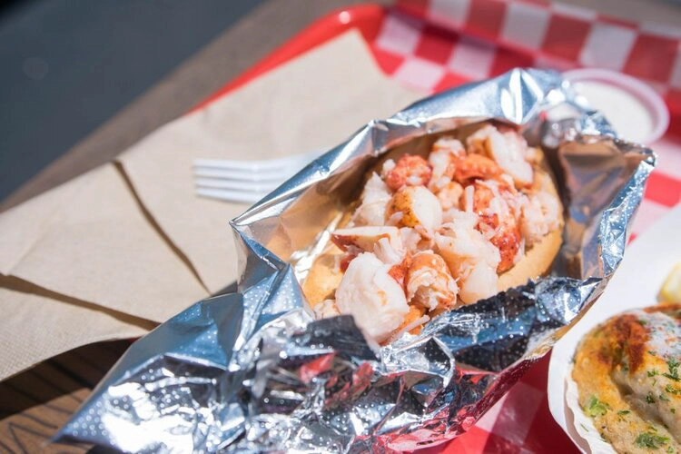
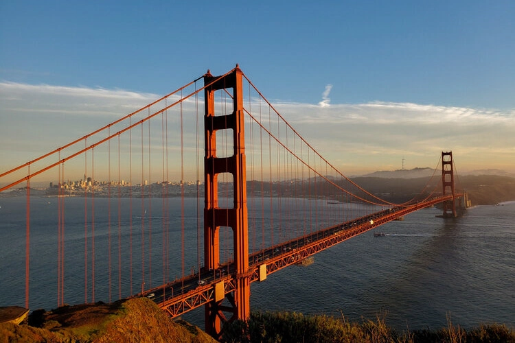
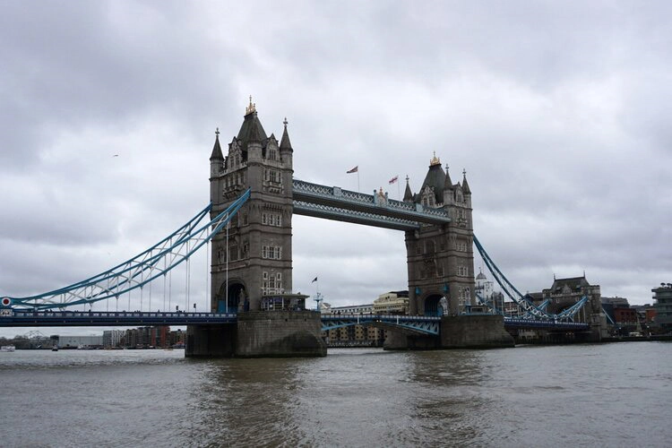

8/22/21
Who doesn’t love a classic cake that’s full of chocolatey goodness and layers of soft fluffy sponge?!

8/15/21
Boston is full of some amazing restaurants and these are our top places for you to try next!

8/8/21
As we try our best not to become addicted to coffee, we often switch up our morning drinks with non coffee options.

7/25/21
Are you tired of getting stains on your furniture or damaging your tables with your favorite beverages? Well, we have a solution for you - coasters!

6/13/21
We love collecting cute ceramic pieces so we took on the challenge of making our own with air dry clay!

4/29/21
Following our trend of Internet things, we decided to make our own version of the popular Mini Brands items that have been floating around!

4/18/21
With the new incoming warm weather, where better to explore and enjoy the sunny weather than the great Bay area in the US, the city of San Francisco.

11/13/20
Ah yes, the great city of London, home of the queen’s thirty or so corgis and the most soothing and pleasing of English accents.
10/29/20
We know Paris has enough museums to visit and walks along the Seine to fill up your whole trip, but don’t forget about a beautiful place just outside the city-- Versailles.